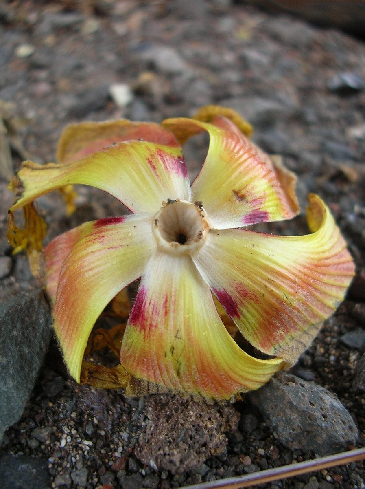
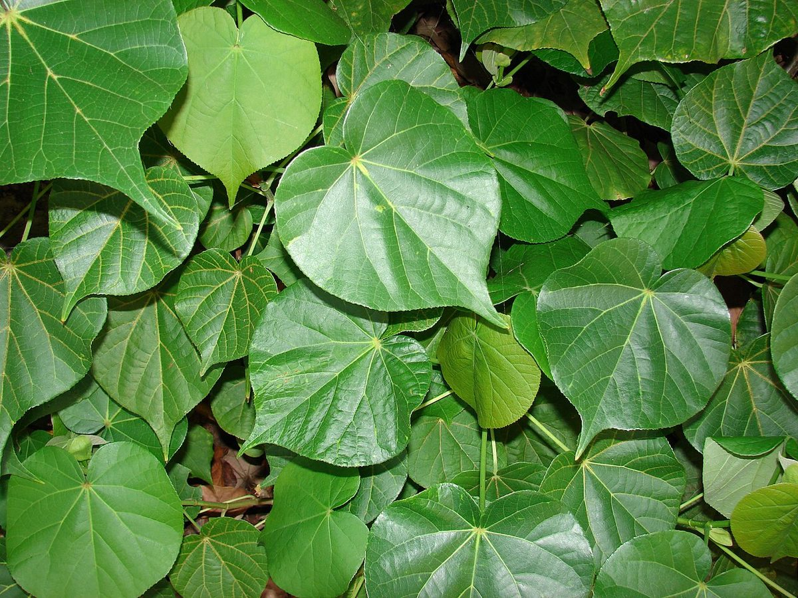
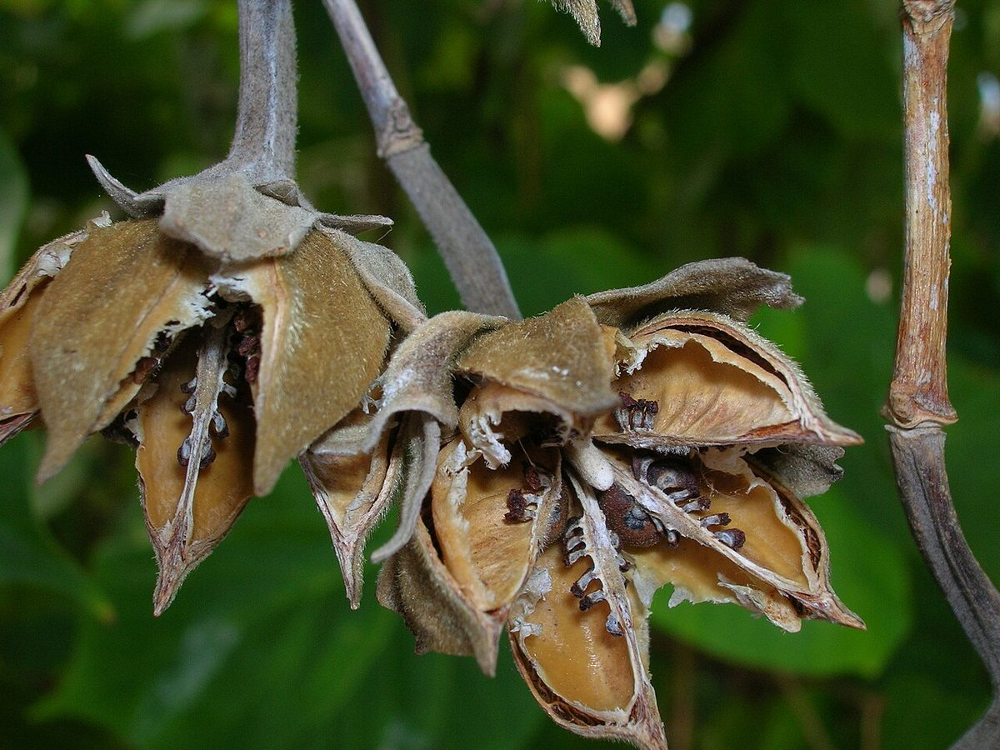

Hibiscus tiliaceus
hau · beach hibiscus, sea hibiscus




Quick facts
| Family | Malvaceae |
|---|---|
| Scientific name | Hibiscus tiliaceus |
| Hawaiian name(s) | hau |
| English name(s) | beach hibiscus, sea hibiscus |
| Status | Indigenous (native, non-endemic) |
| Conservation | — |
| Coastal zones | Valley mouth Riparian Beach strand |
| Occurrence | Forms dense often-impenetrable thickets at valley bottoms and along streams reaching the coast; common at Kalalau, Honopū, Nuʻalolo Kai, and Miloliʻi valley mouths and back-beach flats. Frequently the dominant lowland-coastal woody plant on the Nā Pali coast. |
How to identify
- Growth form
- Sprawling shrub-to-small-tree forming dense thickets — branches root where they touch the ground, so a single hau can spread laterally into an impassable tangle. On more open sites can become a rounded small tree.
- Size
- 4–8 m tall, spread often more than double the height.
- Leaves
- Alternate, large, heart-shaped (cordate) with a broadly rounded outline and a pointed tip, 10–25 cm long. Upper surface dark green and smooth; underside notably velvety-white from a coating of tiny stellate (star-shaped) hairs.
- Flowers
- Classic hibiscus form, ~8–12 cm across, with five overlapping petals. Opens bright yellow with a dark maroon centre in the morning; petals darken through the day to orange, then red-purple by late afternoon; drops by evening. The colour change on a single day is diagnostic and easy to teach.
- Fruit / seed
- A small dry ovoid capsule 1.5–2 cm long, splitting into five valves to release small hairy seeds.
- Bark / stem
- Smooth pale grey on younger stems; inner bark strongly fibrous, the source of the traditional cordage material.
- Where it sits on the coast
- Valley bottoms, back-beach flats, along low-elevation streams — always in accessible-water settings, never on dry sea cliffs.
Clinchers (features that lock the ID)
- Cordate leaf with velvety-white stellate-hair underside.
- Hibiscus flower that changes colour through the day — yellow morning to red-purple evening.
- Sprawling thicket habit with layering (branches rooting where they touch).
- Fibrous inner bark visible on a broken twig.
Look-alikes
- Thespesia populnea (milo) — Milo also has heart-shaped leaves and yellow-with-maroon-centre flowers, but its leaves are more triangular-deltoid with a drawn-out tip and lack the velvety-white stellate underside; milo grows as an upright small tree rather than a sprawling thicket; and milo's capsule is a flattened woody disk that does not split open, while hau's dry capsule splits into five valves.
- Hibiscus rosa-sinensis and cultivated hibiscus — Cultivated ornamental hibiscus species have long-lasting flowers of many colours and do not grow into wild coastal thickets. If it is a garden shrub, it is not hau.
Ecology
Pantropical strand species with buoyant, salt-tolerant seeds and layering vegetative growth — a combination that produces the dense coastal thickets characteristic of Nā Pali valley mouths. Provides cover for native land snails and birds and shade for freshwater seeps at valley bottoms. [1], [2], [3], [10], [31], [35]
Cultural significance
Hau is a foundational plant for Hawaiian cordage, sandals, and light float wood — the fibrous inner bark was worked into rope, cord, and lashing that held houses, canoes, and daily tools together. This guide names those relationships; the transmission of hau-fibre practice belongs to Hawaiian rope-making and fibre-arts traditions and their contemporary keepers.